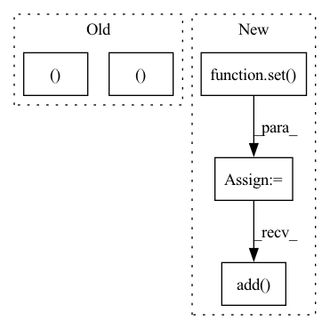

Pattern ID :33947
Before Change
if confidence_val > self.threshold:
bio_label = self.id2label[confidence_index.item()]
if bio_label == ENTITY_OUTSIDE_SYMBOL:
yield bio_label, None, confidence_val
else:
bio_label, class_label = bio_label.split("-")
yield bio_label, class_label, confidence_val
else:
break
else:
bio_label = self.id2label[confidence_index.item()]After Change
self.id2label = id2label
def get_labels(self, word: TokenizedWord) -> Set[Tuple[str, Optional[str]]]:
bio_and_class_labels: Set[Tuple[str, Optional[str]]] = set()
token_confidences_sorted = torch.argsort(word.token_confidences, dim=1, descending=True)
for i, token_confidence_indices in enumerate(token_confidences_sorted):
for confidence_index in token_confidence_indices:
confidence_val: float = word.token_confidences[i][confidence_index].item()
if confidence_val > self.threshold:
bio_label = self.id2label[confidence_index.item()]
if bio_label == ENTITY_OUTSIDE_SYMBOL:
bio_and_class_labels.add(
(
bio_label,
None,
)
)
else:
bio_label, class_label = bio_label.split("-")
bio_and_class_labels.add(
(In pattern: SUPERPATTERN
Frequency: 4
Non-data size: 5
Instances Fragment ID: 97229512
Project Name: astrazeneca/kazu
Commit Name: 422eb2bceb9b3988a63113d66d19b1298220cec1
Time: 2022-11-30
Author: richard.jackson4@astrazeneca.com
File Name: kazu/steps/ner/tokenized_word_processor.py
M Class Name: SmartSpanFinder
N Class Name: SmartSpanFinder
M Method Name: get_labels(2)
N Method Name: get_labels(3)
M Parent Class: SpanFinder
N Parent Class: SpanFinder
M File Name: kazu/steps/ner/tokenized_word_processor.py
N File Name: kazu/steps/ner/tokenized_word_processor.py
M Start Line: 279
M End Line: 312
N Start Line: 246
N End Line: 272
Before Change
confidences_indices_sorted = torch.argsort(
word.token_confidences[label_index], dim=-1, descending=True
)
for confidence_index in confidences_indices_sorted:
confidence_val: float = word.token_confidences[label_index][confidence_index].item()
bio_label = self.id2label[confidence_index.item()]
if bio_label == ENTITY_OUTSIDE_SYMBOL:
yield bio_label, None, confidence_val
else:
bio_label, class_label = bio_label.split("-")
yield bio_label, class_label, confidence_val
break
def span_continue_condition(
self, word: TokenizedWord, bio_and_class_labels: Set[Tuple[str, Optional[str]]]After Change
super().__init__(text, id2label)
def get_labels(self, word: TokenizedWord) -> Set[Tuple[str, Optional[str]]]:
bio_and_class_labels: Set[Tuple[str, Optional[str]]] = set()
token_confidences_sorted = torch.argsort(word.token_confidences, dim=1, descending=True)
for token_confidence in token_confidences_sorted:
confidence_index = token_confidence[0]
bio_label = self.id2label[confidence_index.item()]
if bio_label == ENTITY_OUTSIDE_SYMBOL:
bio_and_class_labels.add(
(
bio_label,
None,
)
)
else:
bio_label, class_label = bio_label.split("-")
bio_and_class_labels.add(
(
bio_label,
class_label,
)
)
return bio_and_class_labels
def span_continue_condition( Fragment ID: 97229518
Project Name: astrazeneca/kazu
Commit Name: 422eb2bceb9b3988a63113d66d19b1298220cec1
Time: 2022-11-30
Author: richard.jackson4@astrazeneca.com
File Name: kazu/steps/ner/tokenized_word_processor.py
M Class Name: SimpleSpanFinder
N Class Name: SimpleSpanFinder
M Method Name: get_labels(2)
N Method Name: get_labels(3)
M Parent Class: SpanFinder
N Parent Class: SpanFinder
M File Name: kazu/steps/ner/tokenized_word_processor.py
N File Name: kazu/steps/ner/tokenized_word_processor.py
M Start Line: 191
M End Line: 210
N Start Line: 167
N End Line: 189
Before Change
// NOTE: setting add_comm_times_to_balance, is for only debug porpuses
TOPO_AWARE = False
PRINT_THEORETICAL = False
PRINT_MIN_MAX_BALANCE = False
PRINT_VAR_STD = False
UTILIZATION_SLOWDOWN_SPEEDUP = True
PRINT_1F1B = True
DO_THEORETICAL = False
TRY_SSGD_ANALYSIS = False
TRY_ASGD_ANALYSIS = True
// given:
// stages_on_same_gpu = [{0, 4}]
// internal represntation:
// stages_on_same_gpu[0] = {0, 4}
// stages_on_same_gpu[4] = {0, 4}
unique_stages_on_same_gpu = stages_on_same_gpu
stages_on_same_gpu = defaultdict(set)
for i in unique_stages_on_same_gpu:
for j in i:
stages_on_same_gpu[j] = i
for i in unique_stages_on_same_gpu:
assert len(i) >= 1
num_dummy_stages = sum((len(i) - 1) for i in unique_stages_on_same_gpu)
if graph is not None and DO_THEORETICAL:
// thoeretical analysis
sequential_f, sequential_b, parallel_f, parallel_b = theoretical_analysis(
graph, recomputation=recomputation, async_pipeline=async_pipeline)
edges = edge_cut(graph)
// theoretical analysis based on the graph assuming the computation is sequential
theoretical_sequential_b_balance = worst_balance(sequential_b)
theoretical_sequential_f_balance = worst_balance(sequential_f)
if TOPO_AWARE:
(topology_aware_sequential_f_balance,
topology_aware_sequential_b_balance ) = topology_aware_balance(
sequential_f, sequential_b, edges)
// theoretical anaysis based on the graph assuming the computation is fully parallel
theoretical_parallel_b_balance = worst_balance(parallel_b)
theoretical_parallel_f_balance = worst_balance(parallel_f)
if TOPO_AWARE:
topology_aware_parallel_f_balance, topology_aware_parallel_b_balance = topology_aware_balance(
parallel_f, parallel_b, edges)
else:
edges = None
TOPO_AWARE = False
PRINT_THEORETICAL = False
// real statistics based on generated partitions
if torch.cuda.is_available():
torch.cuda.reset_max_memory_allocated()
((real_f_times, f_vars, f_deviance), (real_b_times, b_vars, b_deviance),
comm_volume_stats, nocomm_real_f_times, nocomm_real_b_times,
warnings_list) = profile_execution(
sample,
config,
n_iter + 1,
recomputation=recomputation,
bw_GBps=bw_GBps,
async_pipeline=async_pipeline,
add_comm_times_to_balance=add_comm_times_to_balance,
stages_on_same_gpu=stages_on_same_gpu)
// max memory
if torch.cuda.is_available():
max_memory_allocated = torch.cuda.max_memory_allocated()
def add_dicts(d1, d2):
d = {}
for (i1, v1), (i2, v2) in zip(d1.items(), d2.items()):
assert i1 == i2
d[i1] = v1 + v2
return d
def get_seq_no_recomp_no_comm_times():
try:
seq_times = profile_execution(
sample,
config,
n_iter + 1,
recomputation=False,
bw_GBps=bw_GBps, // don"t care
async_pipeline=False, // don"t care
add_comm_times_to_balance=add_comm_times_to_balance, // don"t care
stages_on_same_gpu=stages_on_same_gpu) // don"t care
except Exception as e:
print("-E- failed at get_seq_no_recomp_no_comm_times, known issue")
raise e
return seq_times
def get_comm_vol_str(comm_volume_stats):
communication_volume = dict()
for idx, stats in comm_volume_stats.items():
units = {
"input size": "MB",
"recieve_time": "ms",
"out": "MB",
"send time": "ms",
}
newd = {k: f"{stats[k]:.2f} {units[k]}" for k in stats}
communication_volume[idx] = ", ".join("{!s}:{!r}".format(key, val)
for (key,
val) in newd.items())
return communication_volume
n_partitions = sum(1 for k in config if isinstance(k, int))
num_real_stages = n_partitions - num_dummy_stages
if n_partitions != num_real_stages:
// TODO: shrink everything
for i in unique_stages_on_same_gpu:
j = min(i)
for k in i:
if k == j:
continue
for means_list in [
real_f_times, real_b_times, nocomm_real_f_times,
nocomm_real_b_times, comm_volume_stats
]:
if isinstance(means_list[j], dict):
d1 = means_list[j]
d2 = means_list[k]
for key in d1:
d1[key] += d2[key]
else:
means_list[j] += means_list[k]
del means_list[k]
comm_volume_str = get_comm_vol_str(comm_volume_stats)
real_b_balance = worst_balance(real_b_times)
real_f_balance = worst_balance(real_f_times)
if TOPO_AWARE:
(topology_aware_real_f_balance,
topology_aware_real_b_balance ) = topology_aware_balance(
real_f_times, real_b_times, edges)
real_b_slowdown = slowdown(real_b_times, nocomm_real_b_times)After Change
pipeline_representation_stage_to_device_map = list()
for stage_id in range(n_partitions):
seen_devices = set()
if stage_id in stages_on_same_gpu:
device_id = min(stages_on_same_gpu[stage_id])
else:
device_id = len(seen_devices)
seen_devices.add( device_id)
pipeline_representation_stage_to_device_map.append(device_id)
if n_partitions != num_real_stages:
// TODO: shrink everything Fragment ID: 97229507
Project Name: saareliad/ftpipe
Commit Name: 55ef4505394e58f0d443480215374451f331ea58
Time: 2020-09-09
Author: saareliad@campus.technion.ac.il
File Name: analysis/partition_analysis.py
M Class Name: AnonimousClass
N Class Name: AnonimousClass
M Method Name: run_analysis(11)
N Method Name: run_analysis(11)
M Parent Class:
N Parent Class:
M File Name: analysis/partition_analysis.py
N File Name: analysis/partition_analysis.py
M Start Line: 50
M End Line: 197
N Start Line: 74
N End Line: 292
Before Change
confidences_indices_sorted = torch.argsort(
word.token_confidences[label_index], dim=-1, descending=True
)
for confidence_index in confidences_indices_sorted:
confidence_val: float = word.token_confidences[label_index][confidence_index].item()
if self.threshold is not None:
if confidence_val > self.threshold:
bio_label = self.id2label[confidence_index.item()]
if bio_label == ENTITY_OUTSIDE_SYMBOL:
yield bio_label, None, confidence_val
else:
bio_label, class_label = bio_label.split("-")
yield bio_label, class_label, confidence_val
else:
break
else:
bio_label = self.id2label[confidence_index.item()]
if bio_label == ENTITY_OUTSIDE_SYMBOL:
yield bio_label, None, confidence_val
else:
bio_label, class_label = bio_label.split("-")
yield bio_label, class_label, confidence_val
break
def span_continue_condition(
self, word: TokenizedWord, bio_and_class_labels: Set[Tuple[str, Optional[str]]]After Change
self.id2label = id2label
def get_labels(self, word: TokenizedWord) -> Set[Tuple[str, Optional[str]]]:
bio_and_class_labels: Set[Tuple[str, Optional[str]]] = set()
token_confidences_sorted = torch.argsort(word.token_confidences, dim=1, descending=True)
for i, token_confidence_indices in enumerate(token_confidences_sorted):
for confidence_index in token_confidence_indices:
confidence_val: float = word.token_confidences[i][confidence_index].item()
if confidence_val > self.threshold:
bio_label = self.id2label[confidence_index.item()]
if bio_label == ENTITY_OUTSIDE_SYMBOL:
bio_and_class_labels.add(
(
bio_label,
None,
)
)
else:
bio_label, class_label = bio_label.split("-")
bio_and_class_labels.add(
( Fragment ID: 97229571
Project Name: astrazeneca/kazu
Commit Name: 422eb2bceb9b3988a63113d66d19b1298220cec1
Time: 2022-11-30
Author: richard.jackson4@astrazeneca.com
File Name: kazu/steps/ner/tokenized_word_processor.py
M Class Name: SmartSpanFinder
N Class Name: SmartSpanFinder
M Method Name: get_labels(2)
N Method Name: get_labels(3)
M Parent Class: SpanFinder
N Parent Class: SpanFinder
M File Name: kazu/steps/ner/tokenized_word_processor.py
N File Name: kazu/steps/ner/tokenized_word_processor.py
M Start Line: 279
M End Line: 312
N Start Line: 246
N End Line: 272
Before Change
self._bins_per_octave = bins_per_octave
self._resamplers = []
self._bounds = bounds
for i in range(bounds[0], bounds[1] + 1):
rate = 2.0 ** (-float(i) / bins_per_octave)
s1, s2 = int(sample_rate / rate), int(sample_rate)
self._resamplers.append(
lilfilter.Resampler(
int(s1 / approximation_constant),
int(s2 / approximation_constant),After Change
self._sample_rate = sample_rate
self._resamplers = []
self.fast_ratios = set()
self._bins_per_octave = 12
factors = primes.factors(sample_rate)
products = []
for i in range(1, len(factors) + 1):
products.extend(
[reduce(lambda x, y: x * y, x) for x in combinations(factors, i)]
)
for i in products:
for j in products:
f = Fraction(i, j)
if condition(f):
self.fast_ratios.add( f)
def __call__(self, input: torch.Tensor, shift: Fraction):
Fragment ID: 97229520
Project Name: kentonishi/torch-pitch-shift
Commit Name: 104442cf773ee57bcb8c4a0c5556f60c35cb7f37
Time: 2021-06-18
Author: kento24gs@outlook.com
File Name: torch_pitch_shift/main.py
M Class Name: PitchShifter
N Class Name: PitchShifter
M Method Name: __init__(3)
N Method Name: __init__(6)
M Parent Class:
N Parent Class:
M File Name: torch_pitch_shift/main.py
N File Name: torch_pitch_shift/main.py
M Start Line: 13
M End Line: 54
N Start Line: 16
N End Line: 45